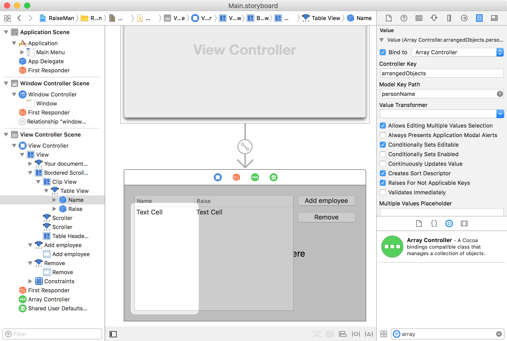
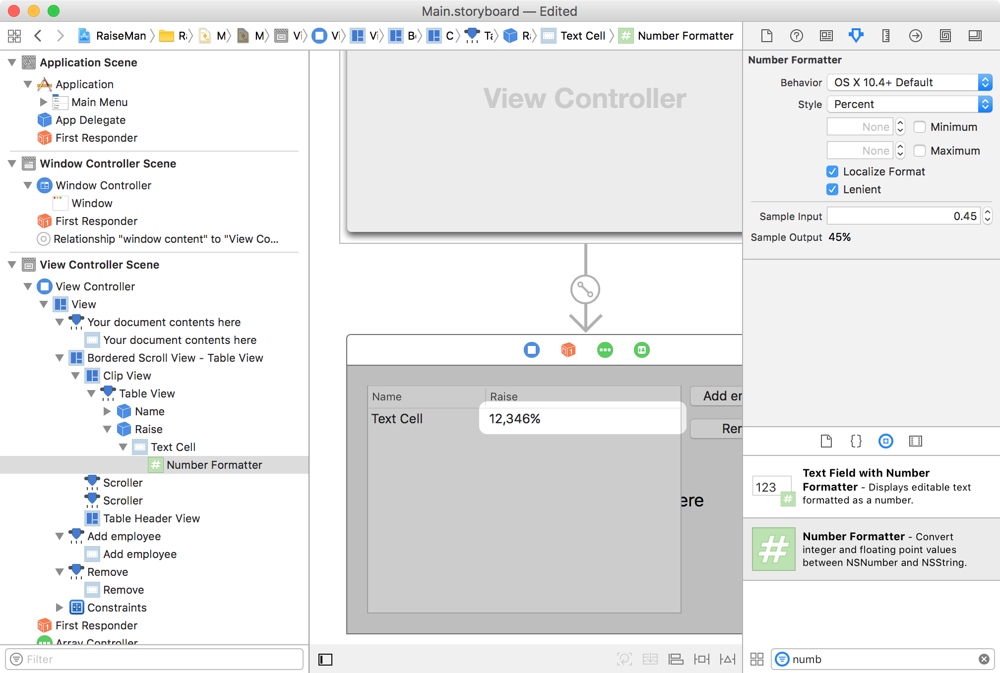

In “Cocoa Programming for Mac OS X” (4th edition), Hillegass and Preble develop the “RaiseMan” application to illustrate a number of common tasks in OS X programming. As the book progresses, the application incorporates open/save, undo/redo, user preferences, and printing. In this lab, we will include self-contained directions for developing the RaiseMan application, including undo/redo functionality. For more detail, we will provide references to chapters 8–9 in the 4th edition of the book.
The Timer Application used in lectures showed an example of an NSObjectController. In this lab we will explore a specific subclass of the NSObjectController, namely the NSArrayController. Like the NSObjectController, it is a supplied class that provides a controller in the MVC sense.
As seen in the screen-shots below, the aim of the RaiseMan application is to track the raises that employees should get.
Create a new Cocoa Application project in Xcode, name it RaiseMan, and enable the "Create Document-Based Application" option, setting the document extension to rsmn. You can disable "Use Core Data". Note that the Document.swift class has already been created for you, as a subclass of NSDocument.
Using the file menu, create a new Person class, and make it a subclass of NSObject. It implements a model, in the MVC pattern. This is why in this case, it does not need to know about Cocoa, and only imports the Foundation framework. (Importing Cocoa would still work.)
01: 02: 03: 04: 05: 06: 07: 08: 09: 10: 11: 12: 13: 14:
// // Person.swift // RaiseMan // // Created by David Eyers on 28/09/16. // Checked for Xcode 8.3 / Swift 3.x in 2017. // import Foundation class Person: NSObject { var personName:String = "New Person" var expectedRaise:Float = 0.05 }
In your Document class, declare an NSMutableArray to hold the list of employees for a document. Unlike the Objective-C code snippets from the 4th edition of the textbook, we do not need to implement init or setEmployees methods.
01: 02: 03: 04: 05: 06: 07: 08: 09: 10: 11: 12: 13: 14: 15: 16: 17: 18: 19: 20: 21: 22: 23: 24: 25: 26: 27: 28: 29: 30: 31: 32: 33: 34: 35: 36: 37: 38: 39: 40: 41: 42: 43: 44: 45: 46:
// // Document.swift // RaiseMan // // Created by David Eyers on 24/09/17. // import Cocoa class Document: NSDocument { var employees = NSMutableArray() override init() { super.init() // Add your subclass-specific initialization here. } override class func autosavesInPlace() -> Bool { return true } override func makeWindowControllers() { // Returns the Storyboard that contains your Document window. let storyboard = NSStoryboard(name: "Main", bundle: nil) let windowController = storyboard.instantiateController(withIdentifier: "Document Window Controller") as! NSWindowController self.addWindowController(windowController) let ourViewController = windowController.contentViewController ourViewController?.representedObject = self } override func data(ofType typeName: String) throws -> Data { // Insert code here to write your document to data of the specified type. If outError != nil, ensure that you create and set an appropriate error when returning nil. // You can also choose to override fileWrapperOfType:error:, writeToURL:ofType:error:, or writeToURL:ofType:forSaveOperation:originalContentsURL:error: instead. throw NSError(domain: NSOSStatusErrorDomain, code: unimpErr, userInfo: nil) } override func read(from data: Data, ofType typeName: String) throws { // Insert code here to read your document from the given data of the specified type. If outError != nil, ensure that you create and set an appropriate error when returning false. // You can also choose to override readFromFileWrapper:ofType:error: or readFromURL:ofType:error: instead. // If you override either of these, you should also override -isEntireFileLoaded to return false if the contents are lazily loaded. throw NSError(domain: NSOSStatusErrorDomain, code: unimpErr, userInfo: nil) } }
Now switch to the Interface Builder to edit Main.storyboard. Like other screenshots seen in this lab, you should drop a table view and two buttons onto your view, with appropriate labels on the buttons. In the Attributes Inspector for the table view, make sure that its Content Mode is set to Cell Based. (Note that your Document Outline may not by default have enough levels expanded for the table view to be seen.)
Also drag out an NSArrayController ("Array Controller") into your View Controller scene in the Document Outline. Select it, switch the Attributes Inspector, and under Object Controller, ensure that the Class Name is set to "RaiseMan.Person" (Note that this is different from the Objective C name!). You should also add keys "personName" and "expectedRaise" in the Keys listed.
Now change to the Bindings Inspector, find the Content Array binding, and bind that to your View Controller. The Controller Key can be left blank, but enter self.representedObject.employees in the Model Key Path (Xcode may indicate that it is unable to resolve the entered keypath, but that is OK in this case). You have now bound the model side of the array controller. We now need to bind the view side of the array controller.
Click the table view, and then double-click the left column. In the Bindings Inspector, set the Value binding to bind to the Array Controller, set the Controller Key to arrangedObjects, and set the Model Key Path to personName. This is shown in the screenshot that follows.
Find the Number Formatter in the Library and drag it onto the second column's cell. This is shown in the screenshot that follows. Set a 10.4+ formatter to display a percentage, and enable Lenient.
Select the second column, and in the Bindings Inspector, bind value to expectedRaise of the Array Controller's arrangedObjects, similarly to the first column.
Control-drag from the Add Employee button over to target the array controller, and choose the "add:" action. Control-drag from the Remove button over to target the array controller also, and choose the "remove:" action. In the Remove button's Bindings Inspector, bind "Enabled" to the canRemove Controller Key of the Array Controller.
In the Attributes Inspector for the Remove button, set a key equivalent, so that the "delete" key will perform the same action. (Recall that "key equivalents" were discussed in lectures.)
Build and run your application. You should be able to create and delete Person objects, and edit the attributes of the Person objects using the table view. Further, you can create new documents (using the menu) that contain their own independent lists of employees.
So far, we have not needed to write much code to develop our application. Key-value coding and bindings, along with the array controller, have greatly simplied our work.
However, the automatic type conversions performed by key-value coding can led to some unexpected results. Try to enter a blank into the "Raise" column, and see what happens.
What we need to do is to provide a setNilValueForKey method in Person, so that we can set a default expectedRaise value of 0.0. Modify your Person.swift class to the following code.
01: 02: 03: 04: 05: 06: 07: 08: 09: 10: 11: 12: 13: 14: 15: 16: 17: 18: 19: 20: 21: 22:
// // Person.swift // RaiseMan // // Created by David Eyers on 28/09/16. // Checked for Xcode 8.3 / Swift 3.x in 2017. // import Foundation class Person: NSObject { var personName:String = "New Person" var expectedRaise:Float = 0.05 override func setNilValueForKey(_ key: String) { if key == "expectedRaise" { expectedRaise = 0.0 } else { super.setNilValueForKey(key) } } }
The table view provides for the ability to sort rows based on the cells in a given column, by clicking on the header row. Right now, the ordering is case-sensitive for the Name column. Test that this is the case in your running application.
In the Interface Builder select the Name column of the table view. In the Attributes Inspector, set the sort key to personName and the selector to be caseInsensitiveCompare:.
This is shown in the screenshot that follows.

Build and run your application, and check that the sorting of names is now case insensitive. (If you are seeking extra information from the 4th edition of H&P, we have reached the start of the “For the More Curious: Sorting without NSArrayController” section of chapter 8, and will now skip to chapter 9.)
Review the lecture notes describing undo / redo. If you want to see undo / redo code already working, examine the Temperature Control example code provided on the lecture notes webpage.
Note that NSInvocations are not supported in Swift, although the API of the NSUndoManager (in some sense) can still be used in a very similar way. Keep this in mind when examining Objective-C examples.
We will now add undo / redo capabilities to the RaiseMan application. (If you are seeking extra information from the 4th edition of H&P, we will reach the start of the “Begin Editing on Insert” of chapter 9.)
Since we bound the contentArray of the array controller to the employees array within our Document object, the array controller is able to add and remove Person objects. These types of invocations will be what we add to the undo stack.
In the Document.swift add the insertObject and removeObjectFromEmpoyeesAtIndex methods, as shown below.
01: 02: 03: 04: 05: 06: 07: 08: 09: 10: 11: 12: 13: 14: 15: 16: 17: 18: 19: 20: 21: 22: 23: 24: 25: 26: 27: 28: 29: 30: 31: 32: 33: 34: 35: 36: 37: 38: 39: 40: 41: 42: 43: 44: 45: 46: 47: 48: 49: 50: 51: 52: 53: 54: 55: 56: 57: 58: 59: 60: 61: 62: 63: 64: 65: 66: 67: 68: 69: 70: 71:
// // Document.swift // RaiseMan // // Created by David Eyers on 24/09/17. // import Cocoa class Document: NSDocument { var employees = NSMutableArray() override init() { super.init() // Add your subclass-specific initialization here. } override class func autosavesInPlace() -> Bool { return true } override func makeWindowControllers() { // Returns the Storyboard that contains your Document window. let storyboard = NSStoryboard(name: "Main", bundle: nil) let windowController = storyboard.instantiateController(withIdentifier: "Document Window Controller") as! NSWindowController self.addWindowController(windowController) let ourViewController = windowController.contentViewController ourViewController?.representedObject = self } override func data(ofType typeName: String) throws -> Data { // Insert code here to write your document to data of the specified type. If outError != nil, ensure that you create and set an appropriate error when returning nil. // You can also choose to override fileWrapperOfType:error:, writeToURL:ofType:error:, or writeToURL:ofType:forSaveOperation:originalContentsURL:error: instead. throw NSError(domain: NSOSStatusErrorDomain, code: unimpErr, userInfo: nil) } override func read(from data: Data, ofType typeName: String) throws { // Insert code here to read your document from the given data of the specified type. If outError != nil, ensure that you create and set an appropriate error when returning false. // You can also choose to override readFromFileWrapper:ofType:error: or readFromURL:ofType:error: instead. // If you override either of these, you should also override -isEntireFileLoaded to return false if the contents are lazily loaded. throw NSError(domain: NSOSStatusErrorDomain, code: unimpErr, userInfo: nil) } func insertObject(_ p:Person, inEmployeesAtIndex index:Int){ NSLog("adding %@ to %@",p,employees) // add the inverse of the insertion action to the undo stack if let undo = self.undoManager { (undo.prepare(withInvocationTarget: self) as AnyObject).removeObjectFromEmployeesAtIndex(index) if !undo.isUndoing { undo.setActionName("Add Person") } // Add the person to the NSMutableArray employees.insert(p, at: index) } } func removeObjectFromEmployeesAtIndex(_ index:Int){ let p = employees.object(at: index) as! Person NSLog("removing %@ from %@",p,employees) // add the inverse of the insertion action to the undo stack if let undo = self.undoManager { (undo.prepare(withInvocationTarget: self) as AnyObject).insertObject(p, inEmployeesAtIndex: index) if !undo.isUndoing { undo.setActionName("Remove Person") } // Remove the person from the NSMutableArray employees.removeObject(at: index) } } }
At this point, undo and redo should work for situations when rows are added and removed, however we would also like to be able to undo and redo edits to individual fields of a row. Before doing so, check that your code runs as expected.
We will want our Document object to be notified about changes to the keys expectedRaise and personName for all of the Person objects it manages.
In lectures we have seen the addObserver method of NSObject.
Modify your Document.swift code to include the myContext static variable, and methods startObservingPerson and stopObservingPerson. Note that we also need to add calls to startObservingPerson and stopObservingPerson within the methods to insert and remove objects.
At the top of the code, we add handlers for willSet and didSet that allow us to start and stop observing employees if the employees mutable array is reassigned.
We need to add two further methods. The changeKeyPath method will ensure that KVO methods are called, thus supporting undo. The observeValueForKeyPath method will be called when an object is edited, either using the changeKeyPath method, or through the user interface. This method itself places changeKeyPath invocations on the undo stack.
001: 002: 003: 004: 005: 006: 007: 008: 009: 010: 011: 012: 013: 014: 015: 016: 017: 018: 019: 020: 021: 022: 023: 024: 025: 026: 027: 028: 029: 030: 031: 032: 033: 034: 035: 036: 037: 038: 039: 040: 041: 042: 043: 044: 045: 046: 047: 048: 049: 050: 051: 052: 053: 054: 055: 056: 057: 058: 059: 060: 061: 062: 063: 064: 065: 066: 067: 068: 069: 070: 071: 072: 073: 074: 075: 076: 077: 078: 079: 080: 081: 082: 083: 084: 085: 086: 087: 088: 089: 090: 091: 092: 093: 094: 095: 096: 097: 098: 099: 100: 101: 102: 103: 104: 105: 106: 107: 108: 109: 110: 111: 112: 113: 114: 115:
// // Document.swift // RaiseMan // // Created by David Eyers on 24/09/17. // import Cocoa class Document: NSDocument { private static var myContext = 0 var employees = NSMutableArray() { willSet { for person in employees { stopObservingPerson(person as! Person) } } didSet { for person in employees { startObservingPerson(person as! Person) } } } override init() { super.init() // Add your subclass-specific initialization here. } override class func autosavesInPlace() -> Bool { return true } override func makeWindowControllers() { // Returns the Storyboard that contains your Document window. let storyboard = NSStoryboard(name: "Main", bundle: nil) let windowController = storyboard.instantiateController(withIdentifier: "Document Window Controller") as! NSWindowController self.addWindowController(windowController) let ourViewController = windowController.contentViewController ourViewController?.representedObject = self } override func data(ofType typeName: String) throws -> Data { // Insert code here to write your document to data of the specified type. If outError != nil, ensure that you create and set an appropriate error when returning nil. // You can also choose to override fileWrapperOfType:error:, writeToURL:ofType:error:, or writeToURL:ofType:forSaveOperation:originalContentsURL:error: instead. throw NSError(domain: NSOSStatusErrorDomain, code: unimpErr, userInfo: nil) } override func read(from data: Data, ofType typeName: String) throws { // Insert code here to read your document from the given data of the specified type. If outError != nil, ensure that you create and set an appropriate error when returning false. // You can also choose to override readFromFileWrapper:ofType:error: or readFromURL:ofType:error: instead. // If you override either of these, you should also override -isEntireFileLoaded to return false if the contents are lazily loaded. throw NSError(domain: NSOSStatusErrorDomain, code: unimpErr, userInfo: nil) } func insertObject(_ p:Person, inEmployeesAtIndex index:Int){ NSLog("adding %@ to %@",p,employees) // add the inverse of the insertion action to the undo stack if let undo = self.undoManager { (undo.prepare(withInvocationTarget: self) as AnyObject).removeObjectFromEmployeesAtIndex(index) if !undo.isUndoing { undo.setActionName("Add Person") } startObservingPerson(p) // Add the person to the NSMutableArray employees.insert(p, at: index) } } func removeObjectFromEmployeesAtIndex(_ index:Int){ let p = employees.object(at: index) as! Person NSLog("removing %@ from %@",p,employees) // add the inverse of the insertion action to the undo stack if let undo = self.undoManager { (undo.prepare(withInvocationTarget: self) as AnyObject).insertObject(p, inEmployeesAtIndex: index) if !undo.isUndoing { undo.setActionName("Remove Person") } stopObservingPerson(p) // Remove the person from the NSMutableArray employees.removeObject(at: index) } } func startObservingPerson(_ person:Person){ person.addObserver(self, forKeyPath: "personName", options: NSKeyValueObservingOptions.old, context: &Document.myContext) person.addObserver(self, forKeyPath: "expectedRaise", options: NSKeyValueObservingOptions.old, context: &Document.myContext) } func stopObservingPerson(_ person:Person){ person.removeObserver(self, forKeyPath: "personName", context: &Document.myContext) person.removeObserver(self, forKeyPath: "expectedRaise", context: &Document.myContext) } func changeKeyPath(keyPath:String, ofObject obj:NSObject, toValue newValue:AnyObject){ obj.setValue(newValue, forKey: keyPath) } override func observeValue(forKeyPath keyPath: String?, of object: Any?, change: [NSKeyValueChangeKey : Any]?, context: UnsafeMutableRawPointer?) { if context != &Document.myContext { // message must have been intended for our superclass super.observeValue(forKeyPath: keyPath, of: object, change: change, context: context) return } if let o = object as? NSObject { if let undo = self.undoManager { let oldValue:AnyObject = change![NSKeyValueChangeKey.oldKey]! as AnyObject NSLog("oldValue = \(oldValue)") (undo.prepare(withInvocationTarget: self) as AnyObject).changeKeyPath(keyPath: keyPath!, ofObject: o, toValue: oldValue) undo.setActionName("Edit") } } } }
Build and run your application. You should be able to undo and redo changes to fields, as well as the addition and removal of rows in the table view. Note that you may get errors from MacOS saying "The document could not be autosaved."—this is because MacOS is itself using your undo manager to attempt to autosave content, but we have not set up the functionality to save documents.
As time permits, do the following exercises. (They are derived from the exercises at the end of Chapter 8 in the 4th edition of H&P.)
“Make the application sort people based on the number of characters in their names. You can complete this challenge using only Interface Builder—the trick is to use a key path. (Hint: Strings have a length method.)”
In early editions of H&P, the RaiseMan application needed to be implemented without NSArrayControllers or bindings. This is because those features were only added to the operating system in Mac OS 10.3.
“The challenge, then, is to rewrite the RaiseMan application without using NSArrayController or the bindings mechanism. Bindings often seem rather magical, and it is good to know how to do things without resorting to magic. Be sure to start afresh with a new project.
The Person class will stay exactly the same. Within the Interface Builder, you should set the identifier of each column to be the name of the variable that you would like displayed (use the Identity Inspector in Interface Builder). Then, the Document class will be the dataSource of the table view and the target of the Create New Employee and Delete buttons. Since this lab now uses storyboards, you will not be able to access IBOutlets or IBActions directly in the Document class. The Document class will have an array of Person objects that it displays. To get you started, here [are the more interesting parts of Document.swift]:
01: 02: 03: 04: 05: 06: 07: 08: 09: 10: 11: 12: 13: 14: 15: 16: 17: 18: 19: 20: 21: 22: 23: 24: 25: 26: 27: 28: 29: 30: 31: 32: 33: 34: 35: 36: 37: 38: 39: 40: 41: 42: 43: 44: 45: 46: 47: 48: 49: 50: 51: 52: 53: 54: 55: 56: 57: 58: 59: 60: 61: 62: 63: 64: 65: 66: 67: 68: 69: 70: 71: 72: 73: 74: 75: 76: 77: 78: 79: 80: 81:
// // Document.swift // RaiseMan // // Created by David Eyers on 24/09/17. // import Cocoa class Document: NSDocument { private static var myContext = 0 var employees = NSMutableArray() @IBOutlet weak var tableView: NSTableView! override init() { super.init() // Add your subclass-specific initialization here. } override class func autosavesInPlace() -> Bool { return true } override func makeWindowControllers() { // Returns the Storyboard that contains your Document window. let storyboard = NSStoryboard(name: "Main", bundle: nil) let windowController = storyboard.instantiateController(withIdentifier: "Document Window Controller") as! NSWindowController self.addWindowController(windowController) let ourViewController = windowController.contentViewController ourViewController?.representedObject = self } override func data(ofType typeName: String) throws -> Data { // Insert code here to write your document to data of the specified type. If outError != nil, ensure that you create and set an appropriate error when returning nil. // You can also choose to override fileWrapperOfType:error:, writeToURL:ofType:error:, or writeToURL:ofType:forSaveOperation:originalContentsURL:error: instead. throw NSError(domain: NSOSStatusErrorDomain, code: unimpErr, userInfo: nil) } override func read(from data: Data, ofType typeName: String) throws { // Insert code here to read your document from the given data of the specified type. If outError != nil, ensure that you create and set an appropriate error when returning false. // You can also choose to override readFromFileWrapper:ofType:error: or readFromURL:ofType:error: instead. // If you override either of these, you should also override -isEntireFileLoaded to return false if the contents are lazily loaded. throw NSError(domain: NSOSStatusErrorDomain, code: unimpErr, userInfo: nil) } @IBAction func createEmployee(_ sender: AnyObject) { let newEmployee = Person() employees.add(anObject: newEmployee) tableView.reloadData() } @IBAction func deleteSelectedEmployees(_ sender: AnyObject) { let rows:NSIndexSet = tableView.selectedRowIndexes if rows.count == 0 { NSBeep() return } employees.removeObjects(at: rows) tableView.reloadData() } func numberOfRowsInTableView(aTableView:NSTableView)->NSInteger { NSLog("reported count \(employees.count)") return employees.count } func tableView(_ tableView: NSTableView, objectValueForTableColumn aTableColumn:NSTableColumn?, row rowIndex:NSInteger)->AnyObject? { let identifier = aTableColumn!.identifier NSLog("identifier=\(identifier)") let person:AnyObject = employees.object(at: rowIndex) return person.value(forKey: identifier)! } func tableView(_ tableView: NSTableView, setObjectValue anObject:AnyObject?, forTableColumn aTableColumn:NSTableColumn?, row rowIndex:NSInteger){ let identifier = aTableColumn!.identifier let person:AnyObject = employees.object(at: rowIndex) person.setValue(anObject, forKey: identifier) } }
Once you have it working, be sure to add sorting!